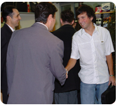

|  |
Моето име е Марко. Роден сум на 23 Октомври 1988 година во Охрид. Основно и средно школо завршив во училиште, а студирам на факултет. :) Не сум обозавател на читање книги, гледање филмови и трошење време на facebook :) . Во голема недоумица сум дали сум антички,словенски македонец или сум некој внук на цар Самоил. :)
Живеам во Охрид покрај езерото и затоа во Скопје се чуствувам како риба :). Гледав лига на шампиони и Интер - мојот фаворит си победи (се подразбира). За интер игра и Панчо нашиот репрезентативец и одигра солидна партија. На 10 Јуни започнува светското првенство во Африка и затоа одвај се чека лето да дојди. :) Шпанија ке се шампиони секако. П.С Многу ја сакам природава |